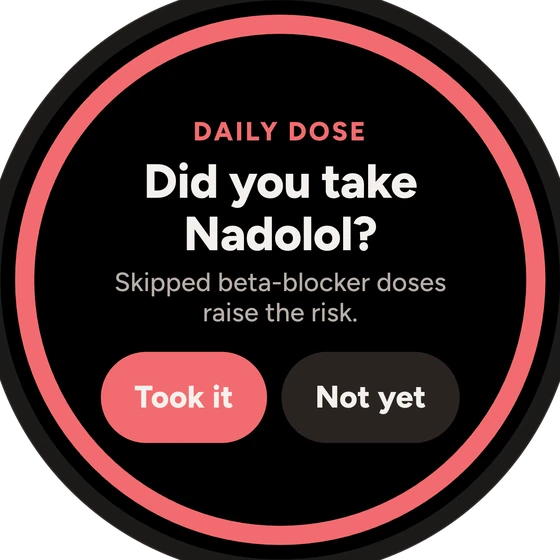
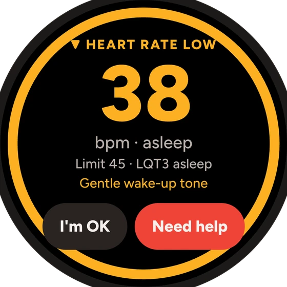
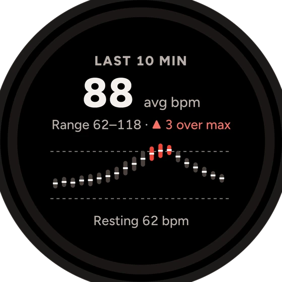
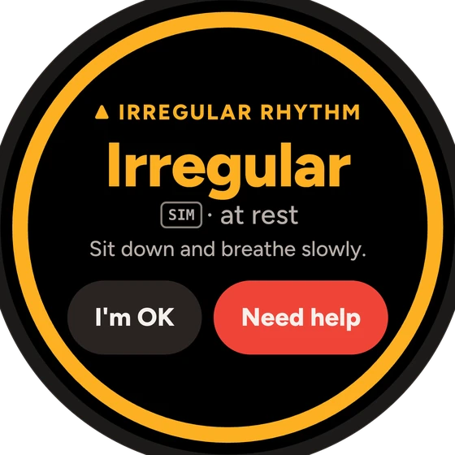

Known riskKlacid → clarithromycin
Checked the QT list
Known riskKlacid → clarithromycin
Checked the QT list
HackYeah 2026 · Huawei “Imagine What's Next”
Celia.ai
Ask before you take it.
A heart-safety agent for people with Long QT syndrome. It checks every medicine, watches your heart rate on the wrist, and speaks for you in an emergency.
Native HarmonyOS, phone + watch · by Double Oreo
The solution
One companion, on every screen that matters.
Check a medicine, open the card, log a symptom or a dose, without opening the app.

Watch
Heart rate, check-ins, SOS

Phone
Talk, check, remember, remind

Emergency
SOS, a card by QR in 13 languages, Live View

Doctor visit
A one-page safety brief, shared by link
Medicine check + agent
Verdicts come from fixed data. The AI only explains.
- 1Type it, scan it, photograph it or say it
Barcode to ingredient for ~68k Polish packs; text read on the device.
- 2The medicine list decides
137 medicines, brand → ingredient, combination rules. Offline. Same medicine, same answer.
- 3The AI explains, and is checked
Plain words and safer options to ask about. Text that contradicts the verdict is thrown away.

01 · Scan
Point at the barcode.

02 · Verdict
Colour, shape and word.
03 · Talk
The agent says it plainly.
See it working
Demo
Recorded on the HarmonyOS emulator (API 20) and a Huawei watch. Simulated heart data is labelled SIMULATED on screen.

On the wrist
A question first, a siren only if you don't answer.
A native HarmonyOS watch app. Limits follow your genotype, and after a risky medicine they tighten for 72 hours.
01 · Calm
All good
Inside your own limits.

02 · Closer
Near your max
Amber before red.

03 · Alert
Racing at rest
“I'm OK” or “Need help”.
04 · Check-in
How do you feel?
One tap answers.

05 · No answer
SOS countdown
10 seconds to cancel.

06 · Help
SOS sent
Tells a bystander what to do.





Plus medicine warnings pushed from the phone, missed doses, a gentle LQT3 wake-up tone and a 10-minute trend. Simulated signals always say SIM.
Emergency + the bad day
When you can't explain, the card does.
Countdown, then your contacts get a message with your location. Also on the lock screen (Live View).
A card by QR on anyone's phone, no app. Written in advance, never machine-guessed.
Three steps, a call button and a CPR metronome at 110 a minute.
Designed for the bad day
Check, card and offline agent still work.
The validator throws the text away.
Unknown: grey, dashed, never “safe”.
“Waiting for a reading”, no stale numbers.
SOS still goes, says “location unknown”.
A ledger lists every request that left.

Double Oreo
Kaloyan
The agent and voice
Georgi
The app and emergency
Mark
Data and the watch